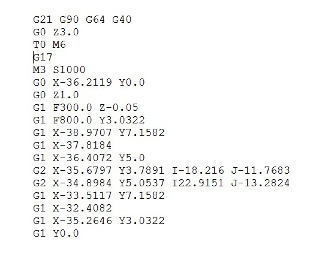
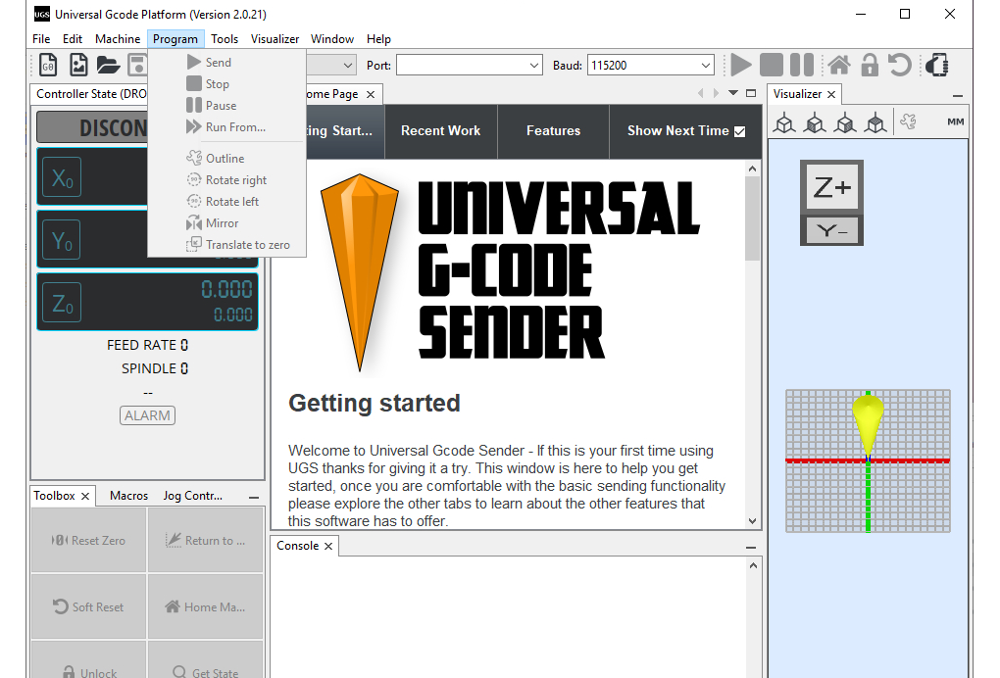

DÉVELOPPEMENT
Comment réussir à dessiner
avec une machine ?
Transformer un pixel numérique en mouvement mécanique : voici le cœur de notre défi technique.
Le langage universel : le G-Code
Le G-code est l’outil principal qui permet de faire fonctionner les machines à commande numérique (CNC). C’est un langage composé de lignes d’instructions séquentielles.
Chaque ligne correspond à une action précise : un déplacement vers des coordonnées exactes (X, Y, Z), le réglage d'une vitesse, ou l'activation d'un outil (comme la levée de notre stylo). C'est ce fichier qui fait le lien direct entre le monde numérique et le mouvement physique.

De l'image au tracé
Pour que la machine comprenne un dessin, il ne suffit pas de lui envoyer une image classique. Nous utilisons le logiciel vectoriel Inkscape pour transformer l'image en tracés géométriques (des vecteurs).
Une fois vectorisé et mis à la bonne échelle, le dessin est converti en G-code grâce à une extension spécifique qui va calculer précisément le parcours physique que devra suivre le stylo.
Le contrôle de la machine
Pour piloter la machine et exécuter le dessin, nous utilisons une interface de contrôle sur ordinateur, comme Universal Gcode Sender (UGS).
Ce logiciel permet non seulement de calibrer les axes et de déplacer la machine manuellement pour définir son point de départ, mais surtout d'envoyer le fichier G-code ligne par ligne à la carte électronique (équipée de son Firmware) qui l'exécutera en temps réel.
